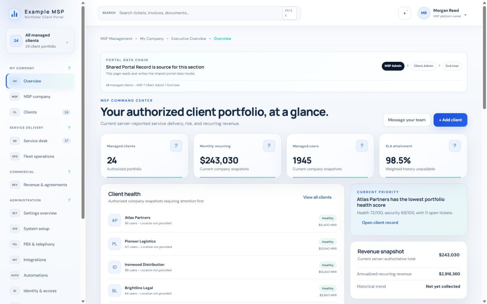
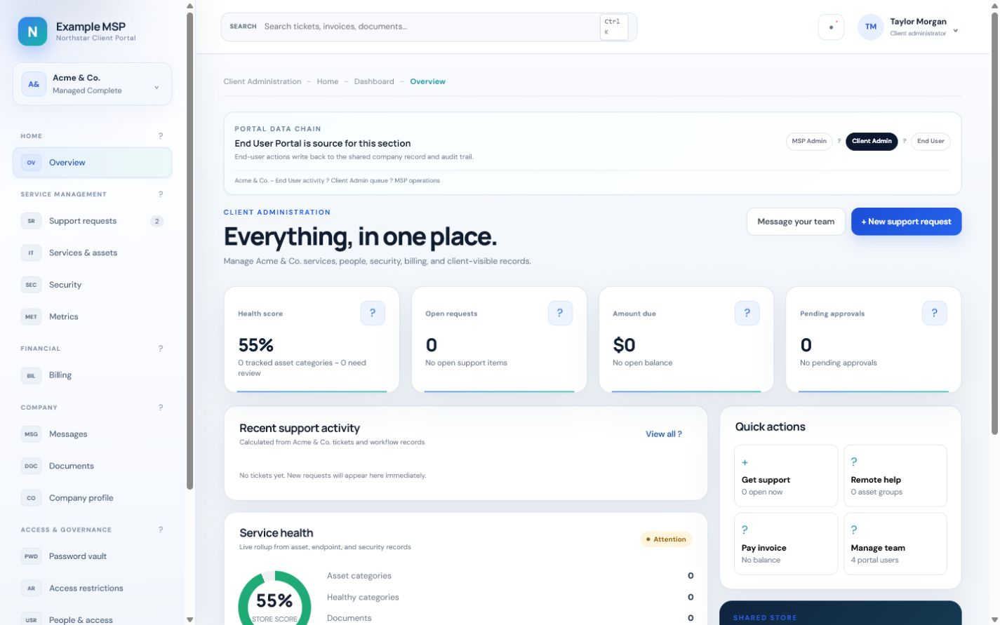
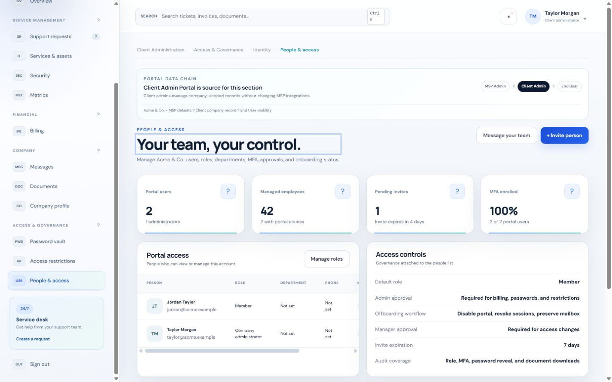
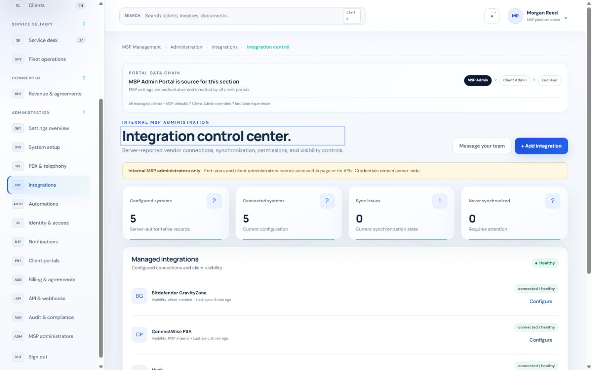

Default-deny routing
Every route enforces a named permission. Unknown paths return JSON 404s; unsupported methods return 405 with an Allow header.
Northstar MSP Portal 1.0.0
End-user self-service, client administration, and internal MSP operations in a single application — where proving who someone is never, by itself, grants access to a client's data.
Every route enforces a named permission. Unknown paths return JSON 404s; unsupported methods return 405 with an Allow header.
The app role from Entra is intersected with the database role. The company_id claim is only a selection hint.
Client users guessing another company's resource ID get a not-found response. Isolation is covered by automated tests, not convention.
Append-only application audit events, request IDs, security headers, and durable denial auditing on every response.
Product tour
Each audience gets a workspace scoped to what they are authorized to see — enforced on the server, not hidden in the UI.




Request path
Browser / Microsoft Entra
|
v
server/auth.cjs token validation
|
v
server/repository.cjs identity, membership,
portfolio, permissions
|
v
server/database.cjs versioned migrations
|
v
server/app.cjs default-deny API +
static deliveryFull detail in the security model.
Before you handle customer data
Version 1.0.0 ships a real backend for authentication, tenant context, company APIs, people and membership, records, approvals, install profile, settings, audit storage, and ConnectWise sync. Production navigation release-gates unfinished modules. The embedded SQLite store suits a single-node pilot — migrate to PostgreSQL with row-level security before multi-instance rollout.